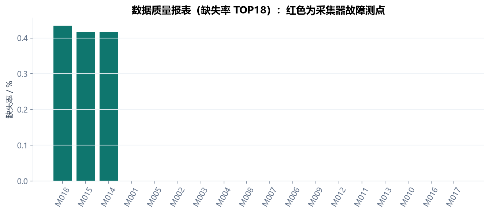

数据工程与数据质量治理
在工业能源场景里，数据清洗不是预处理，而是产品的一部分。这一章给你一套能直接照做的判断标准：什么该补、什么该扔、什么该报警，以及怎么把“数据靠不靠谱”变成可以给业务看的分数。
先算一笔时间账
项目一的原始数据是 2 年、15 分钟粒度，约 7 万行；项目二是 40 个测点 × 60 天 × 96 点，23 万行。生成脚本里我故意注入了缺失、重复、负值、零值、倍率错误、卡死和尖峰——因为真实电表数据就长这样。
听起来 0.68% 很小？换算一下：40 个测点里，每天约有 26 个点是空的。如果直接 dropna()，一天 96 点会变成 95 点、94 点，滞后特征 shift(96) 就再也不对应“昨天同一时刻”了——误差会以你察觉不到的方式扩散。
三件事：完整性（该有的有没有）、准确性（数值对不对）、一致性（口径统一不统一）。岗位 JD 里的“建立数据质量监控体系”，就是把这三件事变成每天自动跑、自动出报表的机制。
六类脏数据：长什么样，怎么处理
下面每一类都配了项目里的真实数据形态。先认脸，再谈处理。
| 类型 | 真实表现 | 怎么发现 | 怎么处理 |
|---|---|---|---|
| 缺失 | 某时刻没有记录；或整段 2~8 小时为空 | reindex 后 isna()；统计连续缺失长度 |
短缺口（≤2h）插值；长缺口置空 + 缺失标记 + 质量告警 |
| 重复 | 同一测点同一时刻出现两行，值略有差异 | duplicated(["meter_id","ts"]) |
保留最后一条（采集时间最新）或取均值，并计数上报 |
| 越界 / 非法值 | 负功率、超过变压器容量 3 倍、单位写成 W | 按容量上下限、物理常识过滤 | 置空而不是截断——截断会制造虚假的“满功率平台” |
| 卡死 | 连续 8 小时数值一字不差（如恒为 12.30） | 滚动窗口内 nunique()==1 或标准差为 0 |
标记为传感器故障，不参与建模；告警到运维 |
| 倍率错误 | 整条曲线突然变成原来的 3 倍，持续多天 | 同业比值 peer_ratio 突变；与自身历史比 |
不要自动除 3，先告警核查；确认后按台账修正 |
| 尖峰 / 归零 | 单个点突然 ×7，或突然变 0 又恢复 | 与前后点差分、滚动 MAD、容量上限 | 单点置空插值；若伴随设备状态则保留并标注 |
原始数据长这样
这是项目二 meter_readings_raw.csv 的前几行。真实数据不会告诉你哪行有问题，你得自己找。
| meter_id | ts | p_kw | temp_c | 备注 |
|---|---|---|---|---|
| M001 | 2024-07-01 00:00:00 | 9.41 | 22.8 | 正常 |
| M001 | 2024-07-01 00:15:00 | 9.46 | 22.9 | 正常 |
| M001 | 2024-07-01 00:30:00 | 9.77 | 22.1 | 正常 |
| M003 | 2024-07-01 03:15:00 | -0.42 | 21.7 | 负值，非法 |
| M007 | 2024-07-19 02:00:00 | 0.0 | 26.4 | 深夜归零，可疑 |
| M011 | 2024-07-20 13:00:00 | 63.0 | 31.2 | 倍率 ×3 后异常放大 |
| M018 | 2024-08-05 10:00:00 | 12.30 | 29.8 | 连续 8h 恒为 12.30（卡死） |
| M022 | 2024-08-03 18:15:00 | 412.7 | 33.1 | 尖峰，容量仅 180 kW |
| M001 | 2024-07-01 00:00:00 | 9.43 | 22.8 | 重复记录 |
“尖峰”和“窃电”在数值上都表现为异常，但业务含义完全相反：前者可能是采集错误，后者是要追缴电费的线索。清洗阶段的目标是区分“数据错误”和“业务异常”，而不是把所有异常都抹平。项目二的做法是：数据错误在清洗阶段处理，业务异常保留并交给检测模块。
缺失值：先判断机制，再选方法
统计学把缺失分成三类。你不需要背名字，但需要知道为什么不能无脑插值。
完全随机缺失
和任何变量都无关，纯粹是传输丢包。插值风险最小。
随机缺失
缺失与已观测到的量有关。比如高温时段采集器更容易掉线。
非随机缺失
缺失本身带信息。比如设备断电才没有读数——这个“空”本身就是故障信号。
所以处理前先问：这个缺口有多长？用来做什么？
≤ 2 个点（30 分钟）
线性插值。对负荷这种连续量足够合理。
2 个点 ~ 2 小时
优先用“昨日同一时刻 + 今日前后点”混合填充；同时打 is_imputed 标记。
超过 2 小时
不要造数据。置空，并在日特征里记录 completeness；该天的样本可降权或剔除。
整表离线
单独告警，走补采流程。算法侧只做标记，不做修补。
def clean_load(df): df = df.drop_duplicates(subset="ts", keep="last").sort_values("ts") idx = pd.date_range(df.ts.min(), df.ts.max(), freq="15min") s = df.set_index("ts")["load_mw"].reindex(idx) # 非法值：负值、超过历史 99.9 分位的 1.6 倍 cap = s.quantile(0.999) * 1.6 s[(s < 0) | (s > cap)] = np.nan # 短缺口插值（上限 8 个点 = 2 小时） s = s.interpolate(method="time", limit=8) # 长缺口用昨日同期兜底，并保留标记 miss = s.isna() s = s.fillna(s.shift(96)) return s.to_frame("load_mw").assign(is_imputed=miss.values)
负荷有强日周期，昨天同一时刻的值比全局均值更接近真实。均值填充会把早晚峰削平，直接破坏模型要学的形态。这是时序插值和表格插值最大的区别。
异常值：三种统计方法 + 一条业务规则
不要只用一个方法。它们各自假设不同，组合起来才稳。
| 方法 | 判断规则 | 适用与局限 |
|---|---|---|
| 3σ | 偏离均值超过 3 倍标准差 | 假设近似正态。负荷有双峰、不服从正态，容易漏掉峰谷处的异常 |
| IQR | 超出 Q1−1.5·IQR 或 Q3+1.5·IQR | 不依赖分布，稳健；但对强周期数据仍会把“正常的峰”判为异常 |
| MAD | |x − median| / (1.4826·MAD) > 3.5 | 比 σ 更抗极端值，适合做单点尖峰检测 |
| 业务规则 | 超出变压器容量、负值、连续恒定 | 最可靠。物理约束永远优先于统计规则 |
def mad_flags(s, k=3.5, window=96): med = s.rolling(window, min_periods=window // 2).median() mad = (s - med).abs().rolling(window, min_periods=window // 2).median() score = (s - med).abs() / (1.4826 * mad.replace(0, np.nan)) return score > k # 用法：只标记，不直接删；结合容量上限一起看 flag = mad_flags(s) & (s > capacity * 0.9)
用“全序列中位数”做基线，会把夏季整体高负荷判成异常；用“未来窗口”又造成泄漏。正确做法是只用当前时刻之前的数据计算基线与阈值——这和模型训练的原则一致。
数据质量指标体系
“数据质量”不能只靠感觉。要拆成可计算的指标，每天出报表，让问题自己浮出来。
| 指标 | 计算 | 说明 |
|---|---|---|
| 完整率 | 有效点数 / 应有点数 | 最基础，项目二的 score 就是它 |
| 越界率 | 超出物理范围的点 / 总点数 | 反映采集或倍率问题 |
| 重复率 | 重复时间戳数 / 总行数 | 网关重传的典型症状 |
| 突变率 | 相邻点变化超过阈值次数 / 总点数 | 尖峰与归零 |
| 恒定率 | 滑动窗口内方差为 0 的占比 | 传感器卡死 |
| 及时率 | 按时到达的记录 / 应到记录 | 影响实时预测能否用上最新数据 |
项目二实际输出的质量报表节选（quality_report.csv）。注意：这份报表是在补齐后统计的，所以只剩少量残留缺失——这也说明“补齐”本身会掩盖问题，因此必须同时保留原始缺失率。
| meter_id | missing_rate | capacity_kw | meter_type | score |
|---|---|---|---|---|
| M001 | 0.0000 | 215 | office | 100.0 |
| M014 | 0.00417 | 287 | factory | 99.6 |
| M015 | 0.00417 | 427 | factory | 99.6 |
| M018 | 0.00434 | 315 | factory | 99.6 |
| M029 | 0.0000 | 286 | mall | 100.0 |
项目里 score = 100 × (1 − missing_rate)，只考虑了完整性。真实系统中应加权组合完整率、越界率、突变率、及时率，并按测点类型设不同权重。教程保留简单版本是为了让你先跑通链路；面试时主动说出“这个分数还可以怎么改进”，反而是加分项。


时序数据库：InfluxDB 与 TimescaleDB
为什么不用 MySQL 存读数？因为时序数据是“写多读少、按时间范围查、按标签过滤、旧数据要降采样”。关系库也能存，但索引膨胀、聚合慢、保留策略麻烦。
| 维度 | InfluxDB | TimescaleDB |
|---|---|---|
| 数据模型 | measurement + tag + field + timestamp | 普通 PostgreSQL 表 + hypertable 分区 |
| 查询语言 | Flux / InfluxQL | 标准 SQL |
| 优势 | 写入吞吐高，保留策略与降采样开箱即用 | 生态成熟，能 join 业务表，SQL 门槛低 |
| 适合 | 纯测点海量写入、监控大屏 | 需要和台账、工单、用户表关联分析 |
| 本项目 | 可存 meter_readings | 可存测点读数 + 测点台账 + 告警 |
InfluxDB：写入与查询
// 写入：行协议（line protocol） meter_readings,meter_id=M001,park=P01,type=office p_kw=45.2,temp_c=28.4 1720000000000000000 // 查询：取 M001 最近 7 天，按小时均值 from(bucket: "ems") |> range(start: -7d) |> filter(fn: (r) => r._measurement == "meter_readings" and r.meter_id == "M001") |> aggregateWindow(every: 1h, fn: mean, createEmpty: false) |> yield(name: "hourly_mean")
TimescaleDB：建表与降采样
-- 普通表变成超表：按时间自动分区 CREATE TABLE meter_readings ( ts timestamptz NOT NULL, meter_id text NOT NULL, p_kw double precision, temp_c double precision ); SELECT create_hypertable('meter_readings', 'ts'); -- 小时均值 + 有效点数（用于判断该小时是否可信） SELECT time_bucket('1 hour', ts) AS bucket, meter_id, avg(p_kw) AS avg_kw, count(*) AS n_valid FROM meter_readings WHERE ts >= now() - interval '7 days' GROUP BY bucket, meter_id ORDER BY bucket; -- 连续聚合：自动维护日粒度汇总 CREATE MATERIALIZED VIEW meter_daily WITH (timescaledb.continuous) AS SELECT time_bucket('1 day', ts) AS d, meter_id, avg(p_kw) AS mean_kw, max(p_kw) AS max_kw, count(*) AS n FROM meter_readings GROUP BY d, meter_id;
15 分钟数据一天 96 点，一年 3.5 万点/测点。1000 个测点就是 3500 万行。做年度分析时不可能每次扫全量，必须有小时/日粒度的连续聚合。项目二就是先在内存里聚合到“测点-日”，再做检测——23 万行变成 2400 个测点日，评估和解释都变得可行。
一条完整的清洗流水线
把上面的规则串起来，就是项目二 detect.py 里的 load_and_clean()。它做了五件事，顺序很重要。
读取台账与原始读数
台账提供容量、类型；读数提供时间序列。两者按 meter_id 关联。
去重与排序
同一测点同一时刻只保留一条，按时间升序。乱序会让 shift、rolling 全错。
非法值置空
负值、超过容量 3 倍、零值（在应有负荷的时段）统统置 NaN。
按测点补齐时间索引并插值
每个测点独立 reindex 到 15 分钟，短缺口插值，长缺口保留为 NaN 供后续标注。
统计并输出
记录去重数、置空数、缺失率；输出清洗后的数据和质量报表。
项目二的实际清洗结果（metrics.json 中的 clean 段）：
| 字段 | 数值 | 含义 |
|---|---|---|
| raw_rows | 230,600 | 原始行数 |
| duplicates_removed | 200 | 重复记录 |
| negative_values | 40 | 负功率 |
| zero_values | 60 | 异常零值 |
| clean_rows | 230,400 | 清洗后行数（40 测点 × 60 天 × 96 点） |
| raw_missing_rate | 0.0068 | 原始缺失率 |
| missing_after_fill | 0.0003 | 补齐后残留缺失率 |
注意 230,400 = 40 × 60 × 96 这个数字。它能对上，说明索引补齐没有多也没有少——这本身就是一次很有价值的一致性校验。
df.interpolate() 作用于整张表时，可能把 M001 的值插到 M002 的空位上。必须先 groupby("meter_id") 再处理。同理，滚动统计也要分组，否则会把不同测点的数据混在一起算。
想把清洗写成可复用、可上线的流水线，继续读 专题 B2 · 时序数据工程进阶：时区、96 点日历、缺失机制、Parquet/DuckDB/Spark 与训练服务一致性。
常见问题
Q1：缺失率只有 0.7%，真的需要处理吗？
Q2：为什么不能把异常值直接删掉？
Q3：清洗规则要不要写死在代码里？
Q4：清洗后的数据要不要覆盖原始数据？
Q5：InfluxDB 和 TimescaleDB 到底选哪个？
自测
- 给出三种脏数据，并说明各自的检测方法和处理方式。
- 为什么 15 分钟功率聚合到小时用 mean，电量用 sum？
- 短缺口和长缺口的处理差异，理由是什么？
- MAD 相比 3σ 的优势在哪？为什么滚动基线不能用未来数据？
- 写出质量报表里至少 4 个指标的计算口径。
- TimescaleDB 里
time_bucket和连续聚合分别解决什么问题？